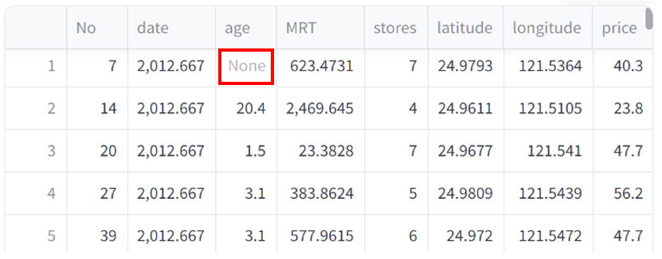

專有名詞解析——資料預處理頁面
April 30, 2024
1、遺失值 (missing values)：
表示某些數值或類別的資料缺失或未被記錄的情況；常以NONE, NA, NULL顯示於資料中。
(1) 刪除含有遺失值的列：若遺失值對您的分析有著重大影響時，可以考慮將具有遺失值的整列刪除。
(2) 自行輸入遺失值：可輸入您在數據中非NONE, NA, NULL的遺失值，例如問卷中的無效作答之數據。
2、類別型變數 (categorical variables)：
描述資料中類別或群組的變數，例如性別、教育程度等；常見對應數據類型有物件（Object）、字符串（String）（STR）等。
3、數值型變數 (numerical variable)：
描述資料中數值的變數，例如年齡、收入等；常見對應數據類型有整數（Integer）（INT）、浮點數（Floating Point）（FLOAT）等。